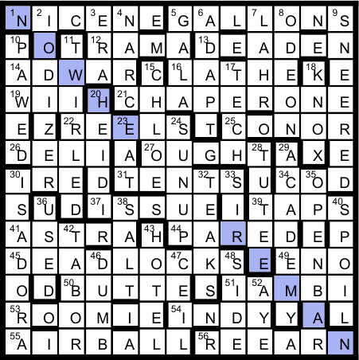

All the across clue/answers have a letter being "transferred" from the answer to the clue. For example, in 1 across, the O in NICE(O)NE appears as an extra letter in the clue c(o)at. These letters need to be removed to enter the clues correctly into the grid. In addition 9 across clues have an "error" in the transferenece, and the letter that must be removed from the grid is different from the letter that must be removed from the clue.
These clues are as follows:
Number Ext. in Clue Answer Ext. in Ans. 5 W GALL(E)ONS E 12 I (D)RAMA D 21 L CHAP(T)ERONE T 26 L DEL(H)I H 31 A TEN(E)TS E 39 R TAP(A)S A 45 U D(R)EADLOCKS R 54 I (C)INDY C 55 N (H)AIRBALL H
Reading down these extra letters (clues first then answers) gives the phrase: WILLA RUINED THE ARCH, this is another cryptic clue for CATHER with an extra H in clue phrase: WILLA RUINED THE ARC(H). Following the pattern from the across clues, you also remove the H from the answer word leaving CATER, the "title" to the puzzle.
| Answer | Clue | Explanation |
| NICE(O)NE | Great work c(o)at lives around corporate head | NINE around CEO |
| GALL(E)ONS | Warships vex extremely lengthy spa(w)ns | GALL + EONS |
| (D)RAMA | Doctor next to a moth(i)er house, for example | DR + A + MA |
| DEADEN(D) | Finally tape(d) Yemeni city in 2-D; it goes nowhere | E + ADEN in DD |
| ADWAR(E) | L(e)ap down a tree evenly in commercial supported programs? | Even letters in LAPDOWNATREE |
| LATHE(R) | Stella(r)! the rock-star hides soap suds | spelled out in Stella the rock. |
| WI(F)I | Heads of Western (F)inland fit inside something located in hotspots | first letters of West Inland fit inside |
| CHAP(T)ERONE | Beginning of novel is s(l)ick on the recap | anagram of ONTHERECAP |
| RE(V)ELS | Flipped switch before Soviet leader celebrates using (v)ales and ports | LEVER reversed with S from Soviet |
| CON(D)OR | Fish (d)ate: northern Oregon vulture | N in COD + OR |
| DEL(H)I | Indian city-state that joined first start(l)ing part of larger state that joined last | DE + L + HI |
| (B)OUGHT | Both (b)ragged carrying couple of guitars around obtained from a store | BOTH (anag.) with GU(reversed) |
| (T)IRE | Peter, (t)out seventh and second steps of scale | TI + RE |
| TEN(E)TS | Beliefs of the controller of fl(a)ying saucer and his nine friends | ten ETs |
| COD(A) | Ultimate b(a)it person, who also prosecutes for the state? | Co-DA |
| (T)ISSUE | One uses it to wipe one's face(t) and uses it badly | anagram of USES IT |
| TAP(A)S | Bar food inside has a pa(r)t reversed | backwards in "has a pat" |
| ASTRA(Y) | One last piece of gloss(y) platform for serving in the wrong direction | A + S + TRAY |
| PAR(S)ED | Tangled drape (s)eats head of state broken apart for analysis | DRAPE(anag.) with S |
| D(R)EADLOCKS | Ladder que(u)er with diamonds discarding restricted items on Marley's head | LADDER(anag.) + ROCKS - R |
| (L)ENO | Comedian Noel, (l)out of sorts | NOEL(anag.) |
| BUTTE(R) | Initially, boss's (r)use tricked temps...except rumors spread | first letters |
| (G)IAMBI | Former Yankee, a soldier, and the beheaded kin(g) of Ena | GI + BAMBI - B |
| ROOMIE(R) | Piglet's (r)ally confused mire with additional space | ROO + MIRE(anag.) |
| (C)INDY | Bra(i)dy youngster sinned, he heard | sinned he sounded out |
| (H)AIRBALL | (N)it might be expelled by a Persian emcee named Monty, holding a degree in International Relations | HALL + IR BA |
| RE(L)EARN | Find once again that chihuahua of f(l)ame consumes tragic king | LEAR inside REN |
| Answer | Clue | Explanation |
| IODIZER | Something used to treat salt overdose after I tossed prize piano away | I + OD + PRIZE(anag) - P |
| ERA | Middle of average period | in avERAge |
| NARC | New storyline: he's into drugs | N + arc |
| GALA | Apple festival | Double meaning |
| ADAPT | Spot able to adjust | Ad + APT |
| LAHR | Human resources is after Los Angeles Lion player | HR after LA |
| ODEON | Lead in Othello's done crazy theater | O + DONE(anag.) |
| SNEERED | Ultimately, Engels and former commie smiled in a twisted way | S + NEE + RED |
| PAWED | Clumsily handled what occurred at daddy's marriage ceremony | PA + WED |
| TWIRLED | Pair of twins I directed after Republican spun around | TW + I + LED after R |
| CHLOE | Revolutionary Argentinian flanks behold Egoyan film | LO in CHE |
| TECH | MIT publication might confuse critic with final entries | last letters of "might confuse critic with" |
| KNOX | Audibly requests to enter fort that's tough to get into | KNOCKS (homophone) |
| HEIDI | An orphan that Guy primarily divides in two | HE + D(ivides) in II |
| EAT | As some Brits say, warm up and chow down | HEAT = 'EAT |
| SUNUP | Beginning of the day spun wildly around you when texting? | SPUN(anag.) with U inside |
| TUTEE | Someone taught an Egyptian king part of course six | TUT + EE |
| ACADEMY | Institute Day came out of order | |
| ISADORA | Performer Duncan and writer Gershwin consuming nasty soda | SODA(anag.) in IRA |
| TEAKS | Woody plants drink successes from a pitcher | TEA + KS |
| SIR | Common address appearing in Douglas, Ireland | douglaSIReland |
| OPENBAR | Start and then stop an opportunity for free booze? | alt defs for OPEN and BAR |
| USED | Like some cars spliced together after removing the hood | FUSED - F |
| SALT | Seaman returning as officer, ranking below cap'n | AS(rev.) + LT |
| SPOIL | Coddle Spanish grease | SP + OIL |
| TABOR | Borat moved around a drum | BORAT(anag.) |
| HOTEL | Pair of homeowners, upset, let temporary housing | HO + LET(rev.) |
| DUMB | Drunk bum under center of ledge is speechless | BUM(anag.) after D |
| CEIL | Make a roof close with wax when spoken | SEAL(homophone) |
| SIDE | Half the combatants retreating head first, ignoring the odds | remove odd letters of HEADFIRST and reverse |
| AYE | I heard! | I(homophone) |